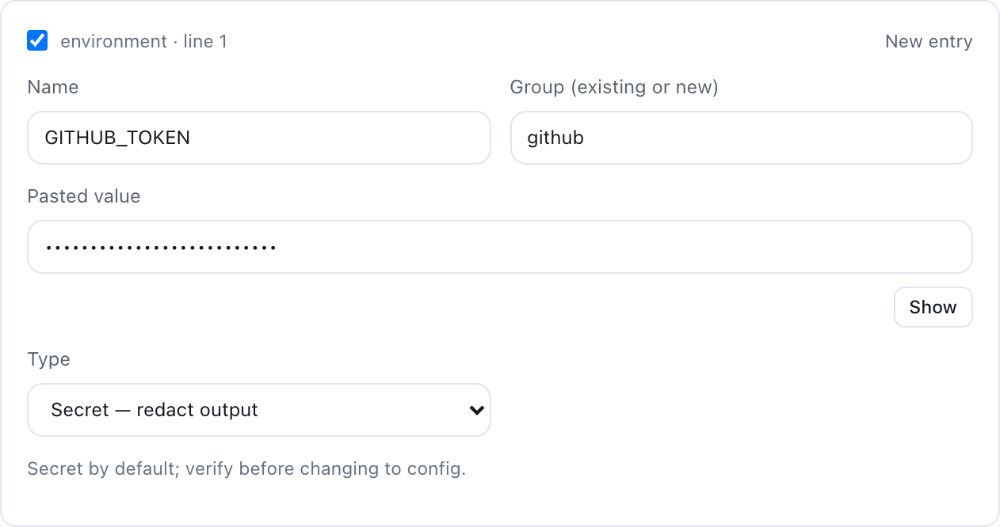
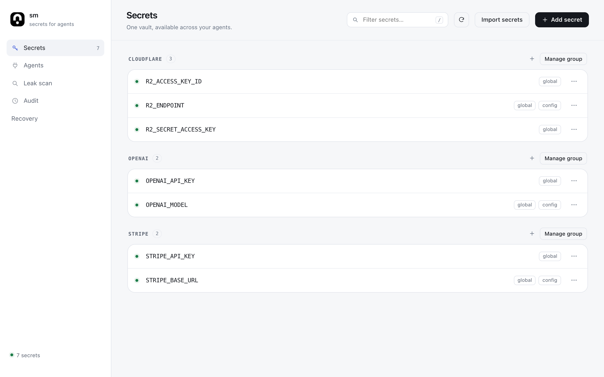
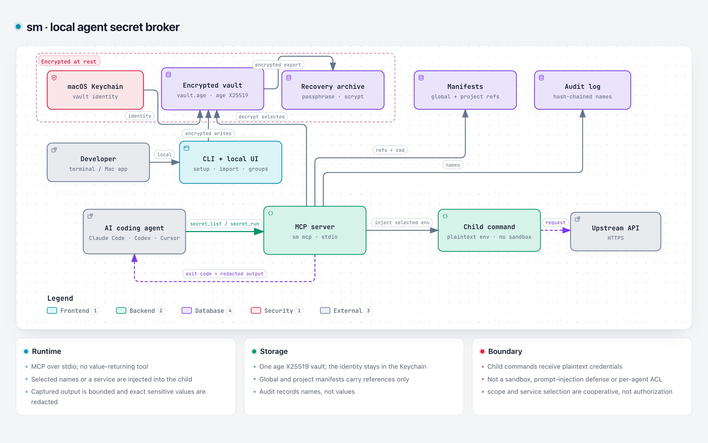

Paste, review, save.
Import .env, JSON, YAML or a provider’s credential block. Edit the names, groups and types before anything is saved.

Open source. On your Mac.
Give coding agents credentials at runtime, not in chat. One local vault, shared across your projects.

Connect once.
Use your usual agents.
Store a credential once. Your agent chooses it by name, runs the command, and gets the result back.
age-encrypted on disk. The vault identity stays in your macOS Keychain.
The MCP server passes selected credentials to the child command as environment variables.
Your agent gets an exit code and captured output with exact sensitive values masked.
{
"command": "aws s3 ls",
"service": "aws"
}This reduces accidental exposure, not the authority of the child process. Read the boundaries.
Move credentials out of scattered files and into a small, local tool you can inspect.
Import .env, JSON, YAML or a provider’s credential block. Edit the names, groups and types before anything is saved.

Keep a base URL beside its API key. Mark plain config separately, and inject a whole group when you need it.
sm exec --service stripe -- ./appUse global secrets in any folder. Project manifests and .env references point to values without containing them.
GITHUB_TOKEN=sm://GITHUB_TOKENSave a passphrase-encrypted archive. Verify it locally and restore into an empty vault on another Mac.
Recovery guide
Trust starts with the limits
No account, cloud sync or telemetry. But sm is not a sandbox, and it shouldn’t pretend to be one.
Read the threat modelArbitrary code can encode or exfiltrate credentials. This is not an egress firewall.
Encoded values, raw TTY output and alternate channels are outside the guarantee.
--only and service choose values for well-behaved callers. They are not authorization.
Start with the CLI, then open the local UI. Free, open source and built for individual developers.
gh release download \
-R karthikmprakash/agents-secret-manager \
-p 'sm-darwin-arm64*'
shasum -a 256 -c sm-darwin-arm64.sha256chmod +x sm-darwin-arm64
mkdir -p ~/.local/bin
mv sm-darwin-arm64 ~/.local/bin/smsm onboard
sm uiUse an empty download folder. Add ~/.local/bin to your PATH if needed. Releases are not notarized.